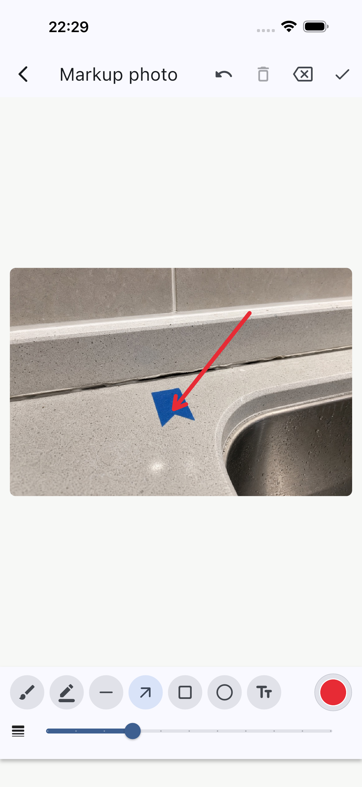
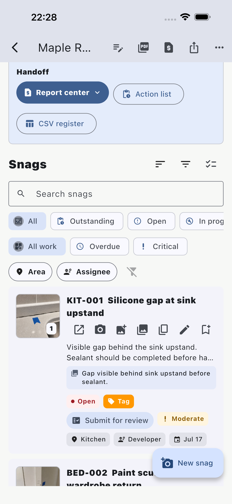
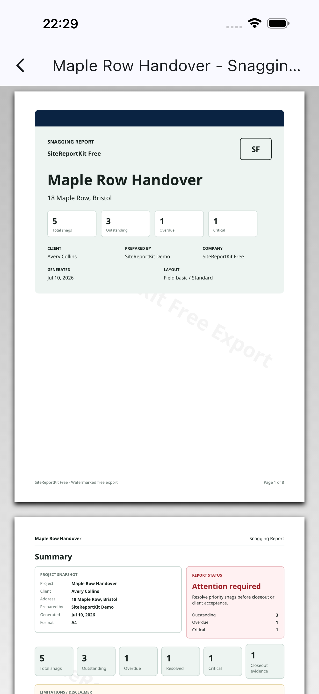

Interior handover
Maple Row Handover
Five interior snagging items covering finishes, paintwork, electrical checks, doors, and a client change request.
5 snags
9 pages
Interior evidence only
Offline-first field reporting
SiteReportKit turns site evidence into a professional handoff.
Capture defensible evidence, assign responsibility, and export branded PDF, XLSX, or CSV deliverables — offline, with no account required.
Capture site evidence.
Assign responsibility.
Export the handoff.
Real sample output
The interior handover and active construction inspection stay separate from capture through export. Each has its own project, issue index, evidence set, action list, and downloadable report.
Interior handover
Five interior snagging items covering finishes, paintwork, electrical checks, doors, and a client change request.

Active construction
Six construction defects covering facade fire-stopping, concrete, drainage, temporary works, masonry, and roof waterproofing.
Inside the export

Each snag keeps the photo, caption, owner, severity, status, and required action together.

Filter to open items only and hand each trade a focused scope of work.

Resolved items include acceptance notes and after photos for a clean handover trail.
Built for site walks
Add issues as you walk, with photos, non-destructive markup, area, trade, severity and a clear action required.
Set the owner, due date, priority and status, then filter the work by contractor, trade or area.
Preview and share a full client PDF, scoped contractor action list, closeout report or CSV issue register before leaving.

Proof from the app
These are real product screens from the current mobile build. Capture, responsibility and reporting stay connected from the first photo to the final handoff.

Preserve the original evidence while adding clear visual markup for the person doing the work.

Give each contractor a focused list without exposing unrelated project items.

Review the client PDF before sharing it, while the walkthrough context is still fresh.
Built for local terminology
Choose the terminology and paper format your clients and contractors expect. These pages describe product settings and examples, not local regulatory certification.
Why teams choose it
Projects and media stay local during capture, so poor signal on site does not block the report.
Preserve originals with SHA-256 integrity records, blur private details, add measurements, and keep edited markups beside closeout evidence.
Support punch lists, snagging reports, defect lists, observations, site audits, and maintenance walks.
Send locked issue handoffs, merge returned updates, follow timestamped comments and activity, then export scoped XLSX registers or closeout packs.
Draw a signature, generate one from a typed name, or import an approved signature image for inspector and client sign-off.
Use cases
Produce polished client PDFs with branded cover pages, limitations text, issue indexes, and photo evidence.
Capture site observations by area and send contractors a clean action list without spreadsheet cleanup.
Run handover walks, assign trade responsibility, track closeout, and export scoped lists for subcontractors.
Document maintenance issues, before and after evidence, recurring defects, and archiveable project records.
Sample downloads
Simple local pricing
Use every core field workflow locally without creating an account. Free includes three total watermarked file exports. The planned Pro launch is a USD 9.99 one-time, store-restorable purchase on supported mobile store builds—no subscription. Final localized storefront pricing may vary by tax and currency.
Free
$0 local use
Individual Pro
$9.99 one-time launch target
App Store launch in progress. Final storefront price and availability will be confirmed on the live listing. Pro does not include accounts, cloud sync or team workspaces.
Common questions
Yes. Core project capture, local storage, report preview and sample workflows do not require an account.
Yes. Project capture, photos, markup and report generation are designed to work locally. A network connection is still required for store purchase or restore.
Free includes three total PDF, XLSX, or CSV file exports with SiteReportKit Free branding. Previews and local projects remain unlimited.
No. It is intentionally focused on fast field capture and professional handoff reports, without BIM, RFIs, schedules or real-time team coordination.
Continue on your phone
Scan the code to open SiteReportKit on your phone, or open a pre-filled text message you can send to yourself. Both links use campaign labels without marketing cookies.
The SMS button only opens your device’s message composer. SiteReportKit does not receive a phone number. The verified store link will replace this pre-launch destination after approval.
SiteReportKit is launching first around fast, local, professional mobile site reporting, with desktop and web-capable workflows planned after the core field workflow is stable.